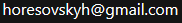

Software Developer
I'm currently completing my Master's degree in Computer Science at Aalto University, Finland. I have obtained my Bachelor's degree from Charles University, Czechia, spent exchange semesters at EPFL, Switzerland and Durham University, UK. I have worked as a Software Design Engineer Intern at SAP Concur.

2019 - Semester Project, EPFL
C++
A practical implementation of a recent research result in rendering volumes, such as smoke and clouds, of spatially and spectrally varying density. Integrated into a widely used research-oriented renderer Mitsuba 2.
2019 - Research Project, Aalto University
Python TensorFlow
An optimization pipeline which solves the underconstrained problem of mapping custom SVBRDF parameters to standard ones which can be used in rendering software such as Blender or Unity.
2018 - Bachelor Thesis, Charles University
C# OpenTK
A novel method for visualization of the difference between two triangle meshes. Includes a software project which extends an existing mesh viewer to support the method and a small user study.
2017 - Software Project, Charles University
C# C++ OpenCV SQLite
Automatic evaluation software for the Mathematical Kangaroo competition. It has a responsive GUI written in C# with asynchronous tasks calling basic image processing functions written in C++ and OpenCV. Program data is stored persistently in an SQLite database.
2016 - Game Jam Entry, Ludum Dare 37
Unity
4th Snail Indoor World Championship - the only racing game where you don't have to watch the road! This game has been created in 48 hours for Ludum Dare 37 where it placed 4th in category Humour.
2015 - WebGL Exercise
WebGL
An interactive 3D model of a robot created in WebGL as an exercise.